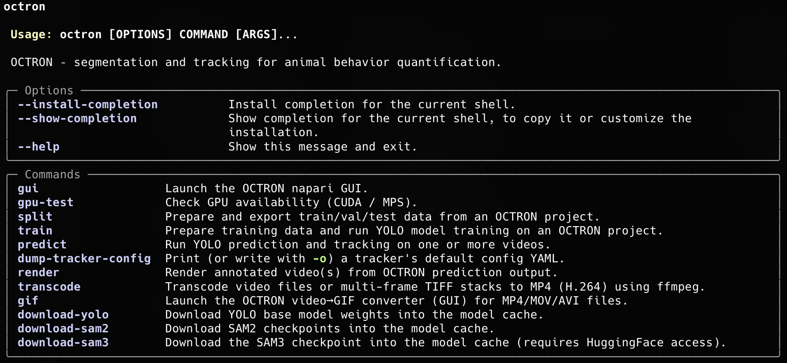

Using the command line interface (CLI)¶
Many of the steps you follow in the GUI, such as training and prediction, are also available with a single octron command in your terminal. The command line interface (CLI) is ideal for batch jobs, headless servers, remote machines (SSH) and reproducible scripts. Some functions, like the render function (for creating overlay videos and tracklet videos - see below), are only available through the command line interface for now.
After installation and activation of your octron environment, you can run octron with no arguments (or with --help) to see the help menu that lists all available commands:

Per-command help
Every subcommand documents its own options. Append --help to any command to see the full, always up-to-date list, for example:
Command overview¶
The table below lists every command and links to the relevant part of the documentation.
| Command | What it does | Related docs |
|---|---|---|
octron gui |
Launch the napari GUI. | Using the GUI |
octron transcode |
Convert videos (or TIFF stacks) to OCTRON-compatible MP4 (H.264). | Create project |
octron split |
Export train/val/test data from an annotated project. | Training › Generate training data |
octron train |
Prepare data (optional) and train a YOLO model. | Training › Train |
octron predict |
Run detection/segmentation and tracking on one or more videos. | Analyze (new) videos, File system › Analysis |
octron render |
Render annotated overlays or per-animal tracklet crops from predictions. | Analyze (new) videos › Results, Access output data |
octron dump-tracker-config |
Print/write a tracker's default config YAML to customize it. | BoxMOT trackers |
octron gpu-test |
Check CUDA / MPS (GPU) availability. | Installation |
octron download-yolo |
Download/refresh YOLO base weights into the model cache. | Installation |
octron download-sam2 |
Download/refresh SAM2 checkpoints into the model cache. | Installation |
octron download-sam3 |
Download/refresh the SAM3 checkpoint (needs HuggingFace access). | Installation |
octron gif |
Convert MP4/MOV/AVI videos to GIF (opens a small GUI helper). | octron gif |
Core workflow¶
These commands mirror the GUI workflow: transcode → (❌ annotate) → (split) → train → predict → render.
Note: Annotation (annotate) is a pure GUI step - you need to use OCTRON in napari for that. Training set splitting (split) is optional; it is also run when you use the train subcommand. Use it only if you want to change the splitting options manually.
octron transcode¶
Convert videos of any format - or multi-frame TIFF stacks - into the MP4 (H.264) format OCTRON expects. This is the command-line equivalent of the transcoding step described in Create project.
Usage: octron transcode [OPTIONS] VIDEOS...
Example: octron transcode -o /path/to/videos/mp4_transcoded /path/to/videos
| Option | Default | Description |
|---|---|---|
VIDEOS... |
(required) | One or more video/TIFF file paths, or a directory containing video files. |
--output, -o |
mp4_transcoded/ next to input |
Output directory where transcoded videos will be saved. |
--crf |
23 |
Constant Rate Factor (0–51); lower = better quality. |
--fps |
source | Output frame rate (TIFF stacks default to 20). |
--no-audio |
off | Drop the audio track instead of re-encoding to AAC. |
--overwrite |
off | Overwrite existing output files. |
octron split¶
Prepare and export the train/val/test split from an annotated OCTRON project, without training. Useful if you want to inspect the split first, and then run octron train --no-split. See Training › Generate training data.
Usage: octron split [OPTIONS] PROJECT_PATH
Example: octron split --train 0.7 --val 0.15 --dry-run /path/to/project
| Option | Default | Description |
|---|---|---|
PROJECT_PATH |
(required) | Path to the OCTRON project directory. |
--mode |
segment |
segment (instance segmentation) or detect (bounding boxes). |
--train |
0.7 |
Fraction of frames used for training. |
--val |
0.15 |
Fraction of frames for validation (the remainder of train+val frames becomes the test split). |
--seed |
88 |
Random seed for a reproducible split. |
--dry-run |
off | Print the split sizes without writing any files. |
octron train¶
Prepare training data (by default) and train a YOLO model. This is the command-line equivalent of Training › Train.
Usage: octron train [OPTIONS] PROJECT_PATH
Example: octron train --model yolo26m --mode segment --epochs 250 --device auto /path/to/project
| Option | Default | Description |
|---|---|---|
PROJECT_PATH |
(required) | Path to the OCTRON project directory. |
--model |
yolo26m |
YOLO base model to train. |
--mode |
segment |
segment (instance segmentation) or detect (bounding boxes). |
--device |
auto |
auto, cpu, cuda, or mps (auto picks CUDA → MPS → CPU). |
--epochs |
250 |
Number of training epochs. |
--imagesz |
640 |
Input image size. |
--save-period |
50 |
Save a checkpoint every N epochs. |
--overwrite |
off | Overwrite an existing trained model (default: skip if best.pt exists). |
--resume |
off | Resume from an existing last.pt checkpoint. |
--no-split |
off | Skip data preparation (use when octron split has already run). |
--train / --val / --seed |
0.7 / 0.15 / 88 |
Split fractions and seed (ignored with --no-split). |
octron predict¶
Run a trained model on new videos to produce detections/masks and tracks. This is the command-line equivalent of Analyze (new) videos; the output layout is documented under File system › Analysis.
Usage: octron predict [OPTIONS] VIDEOS...
Example: octron predict --model /path/to/best.pt --tracker bytetrack --device auto path/to/clip1.mp4 path/to/clip2.mp4
| Option | Default | Description |
|---|---|---|
VIDEOS... |
(required) | Path to one or more video files, or a directory of .mp4 files. |
--model |
(required) | Path to a trained YOLO .pt file (or a directory containing best.pt). |
--tracker |
bytetrack |
Tracker algorithm — see BoxMOT trackers. |
--tracker-config |
– | Custom tracker YAML, overrides --tracker (create one with octron dump-tracker-config). |
--device |
auto |
auto, cpu, cuda, or mps. |
--conf-thresh |
0.5 |
Detection confidence threshold. |
--iou-thresh |
0.7 |
IoU threshold for non-maximum suppression. |
--skip-frames |
0 |
Skip frames between predictions (0 = analyze every frame). |
--one-object-per-label |
off | Track only the top-confidence detection per label. |
--opening-radius |
0 |
Morphological opening radius applied to masks (0 = off). |
--detailed |
– | Region properties to extract — a comma-separated list or all (see Analysis › Explanation of .csv data). |
--overwrite |
off | Replace existing predictions (default: skip already-analysed videos). |
--buffer-size |
500 |
Frames buffered before writing to zarr. |
--output-dir, -o |
alongside each video | Directory where octron_predictions/ is written. |
--local-cache-dir |
from config.yaml |
Stage output on a fast local disk, then move each finished video to --output-dir. |
octron render¶
Turn prediction output into shareable videos: an annotated overlay (masks/boxes/labels) or one stabilised cropped video per tracked animal (tracklets).
Usage: octron render [OPTIONS] PREDICTIONS_PATH
Examples:
# Annotated overlay
octron render --preset draft /path/to/octron_predictions/video1_bytetrack
# One cropped, stabilised video per animal
octron render --tracklets --skip-empty /path/to/octron_predictions/video1_bytetrack
# Force CPU encoding if the GPU encoder (h264_nvenc) fails
octron render --no-nvenc /path/to/octron_predictions/video1_bytetrack
| Option | Default | Description |
|---|---|---|
PREDICTIONS_PATH |
(required) | Path to the directory containing the prediction output (octron_predictions/<video>_<tracker>/). |
--video |
auto | Original video; auto-detected if alongside octron_predictions/. |
--output, -o |
<predictions>/rendered/ |
Output directory for the rendered video. |
--preset |
draft |
Resolution of the rendered video: preview (0.25×), draft (0.5×), or final (full resolution). |
--encoder |
auto |
Video encoder: auto (prefer GPU h264_nvenc, else libx264), nvenc (force GPU), or libx264 (force CPU). |
--no-nvenc |
off | Force the CPU encoder (libx264); shorthand for --encoder libx264. Use if h264_nvenc fails (e.g. an old NVIDIA driver). |
--start / --end |
full video | First / last frame to render. |
--alpha |
0.4 |
Mask overlay opacity (0–1). |
--masks / --no-masks |
mode-dependent | Draw segmentation masks. |
--boxes / --no-boxes |
mode-dependent | Draw bounding boxes. |
--labels / --no-labels |
on | Draw label text (overlay only). |
--min-confidence |
0.5 |
Skip detections below this confidence value. |
--min-observations |
0 |
Skip tracks with fewer than N observations. |
--track-ids |
all | Comma-separated track IDs to render (e.g. 1,3,5). |
--skip-empty |
off | Drop frames with no detection (handy when --skip-frames is used for octron predict). |
--trim |
off | Trim each video to the track's first/last observation. |
--bbox-sizes |
off | Report per-track bounding-box sizes (to pick --tracklet-size), then exit. |
--debug |
off | Verbose logging with per-stage timing. |
When adding the option --tracklets, these additional options apply:
| Option | Default | Description |
|---|---|---|
--tracklets |
off | Render one stabilised crop video per tracked animal. |
--tracklet-size |
auto |
Side length in px of crop (auto = largest bbox + padding). |
--tracklet-smooth-sigma |
2.0 |
Gaussian centroid smoothing in frames (0 = off). |
--tracklet-interpolate |
0 |
Bridge gaps up to N consecutive missing frames. |
--tracklet-segment-only |
off | Black out all pixels outside each animal's mask. |
--tracklet-segment-keep |
0 |
Keep only the N largest mask components (0 = keep all). |
--tracklet-offset |
0,0 |
Shift the crop centre by X,Y pixels (source-video pixels). |
Trackers¶
octron dump-tracker-config¶
Print a tracker's default configuration as YAML (or write it to a file with -o). Edit the file and pass it to octron predict --tracker-config <file> to fine-tune tracking — the command-line equivalent of the Tune dialog described under BoxMOT trackers.
Usage: octron dump-tracker-config [OPTIONS] [TRACKER]:[bytetrack|ocsort|botsort|d-ocsort|hybridsort|boosttrack]
Example: octron dump-tracker-config -o my_tracker.yaml bytetrack
| Option | Default | Description |
|---|---|---|
TRACKER |
bytetrack |
Tracker whose default config to dump. |
--output, -o |
stdout | Write to this file instead of printing (stdout = only print to command line). |
Setup & utilities¶
octron gui¶
Launch the OCTRON napari GUI. See Using the GUI. No options available.
Example: octron gui
octron gpu-test¶
Check and report whether a CUDA or MPS (Apple Silicon) GPU is available — useful to confirm that your install can use hardware acceleration (see Installation). No options available.
Example: octron gpu-test
octron download-yolo / download-sam2 / download-sam3¶
You can manually initiate the download of model weights and checkpoints into the per-user model cache directory. SAM3 requires HuggingFace access (see How to access SAM3 under Model selection).
Examples:
| Option | Default | Description |
|---|---|---|
--force |
off | Re-download even if the files already exist. |
octron gif¶
Open a small GUI helper that converts MP4/MOV/AVI videos to animated GIFs (handy for figures and slides). No options available.
Example: octron gif